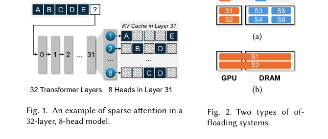
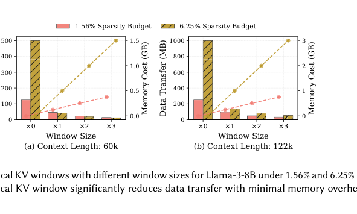
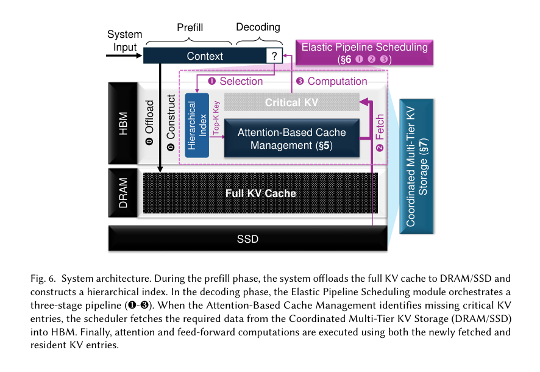
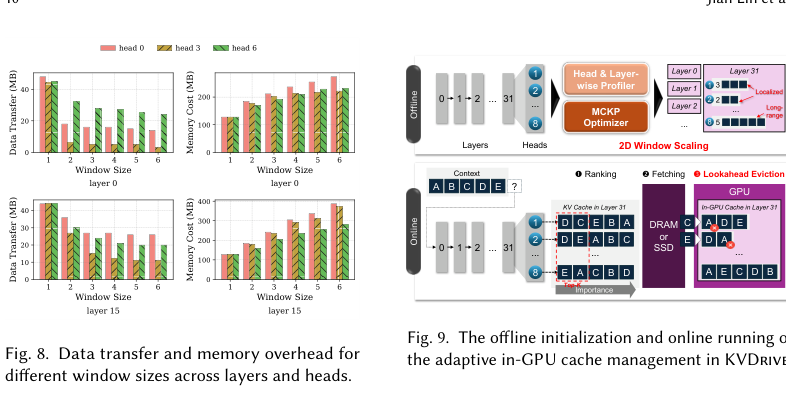
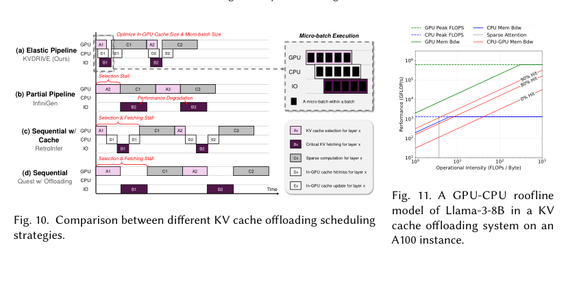
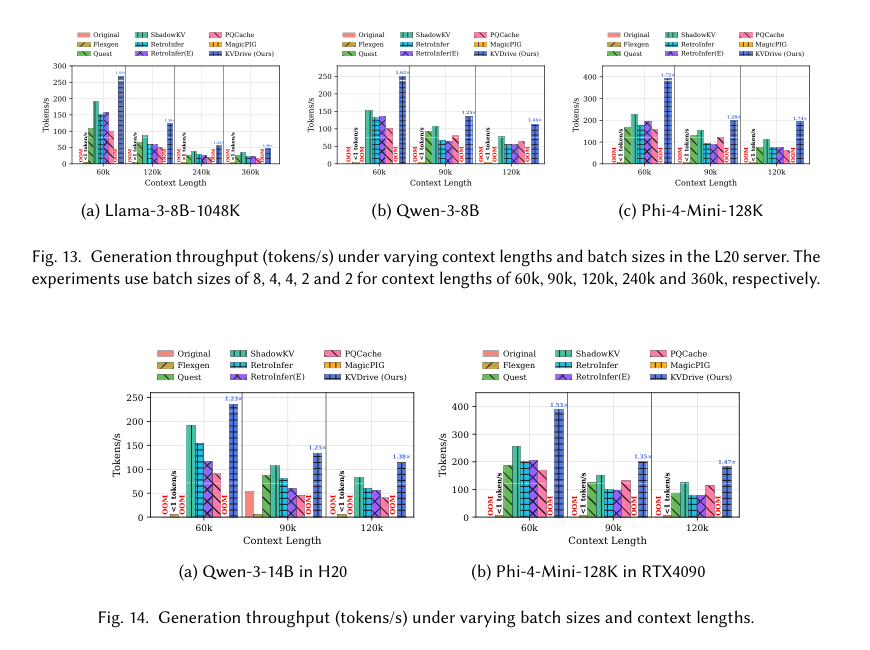

KVDrive：面向长上下文 LLM Inference 的多层 KV Cache 管理系统中文翻译稿
摘要。长上下文 LLM inference 的核心瓶颈是 KV cache memory。现有 offloading systems 通常把 full cache 放在 host memory 中，并在 decoding 时选择关键 entries 拉回 GPU。但这种策略很快遇到天花板：继续提高 sparsity 会损害 accuracy，而 context length 和 batch size 增长又会让 KV transfer 成为 decoding latency 主因。KVDrive 从系统角度解决这个问题，在 GPU HBM、host DRAM 和 SSD 之间进行整体化 KV cache 管理。它提出三项能力：attention-based cache management，用注意力行为指导 in-GPU cache 复用；elastic pipeline scheduling，把 selection、fetching、computation 解耦并重叠执行；coordinated multi-tier KV storage，把 HBM、DRAM、SSD 的数据移动协同起来。实验显示，KVDrive 在保持 accuracy 的同时，相比 state-of-the-art systems 最高提升 1.74 倍 throughput。
1 引言
随着 LLM context window 从 128K 扩展到 1M tokens，KV cache 已成为长上下文 inference 的主要 memory bottleneck。以 Llama-3.1-8B-Instruct 为例，128K tokens 需要超过 16GB KV cache；若叠加 batch size、model weights、activations 和 runtime overhead，直接把 full KV cache 放在 GPU memory 中很快不可行。
已有方法将 KV cache offload 到 host memory，并在每次 attention computation 前取回重要 entries。问题在于，这些方法通常只从 algorithmic sparsity 出发，希望更少取 KV entries；但 sparsity 不能无限提高，否则会影响模型准确性。当 context 和 batch 增大时，selection、fetching 和 computation 顺序执行会产生 GPU stalls，整体 latency 受数据移动支配。

KVDrive 的目标是系统级 co-design，而不是单点 sparsity refinement。它同时考虑 cache placement、pipeline scheduling 和 storage tiering，使长上下文推理可以在紧张 GPU budget 下保持高吞吐。
2 背景与相关工作
现代 decoder-only Transformer 推理包含 prefill 和 decoding。prefill 并行处理输入 tokens，生成第一个输出 token，并在 GPU memory 中保存 KV cache；decoding 逐 token 生成后续输出，并不断追加新的 KV entries。并非所有 tokens 对注意力同等重要，较高 attention score 对应的 key-value pairs 称为 critical KV entries。
稀疏注意力利用这一点，只取 top-k 重要 chunks 或 entries。Quest、ShadowKV、InfiniGen、MagicPIG、PQCache 等系统分别使用 spatial chunking、column selection、similarity grouping 或 ANNS-like retrieval 来减少 attention 和 transfer 成本。但这些系统大多仍使用通用 LRU/LFU cache policy、顺序 selection-fetch-compute pipeline，并且只考虑 DRAM tier。
3 动机与发现
论文在 Motivation 中总结三个发现。第一，critical KV entries 在相邻 tokens 之间不仅有短程相关性，也在更宽 local range 内有 temporal correlation。保留多个最近 decoding steps 的 critical KV window，可以用很少额外 GPU memory 换取大量 host-GPU transfer 减少。

第二，KV selection 和 fetching 合起来占 decoding latency 的很大部分，并且顺序执行造成明显 pipeline stalls。批量更大、上下文更长时，这个问题更严重。Quest 的 selection cost 高，ShadowKV 和 RetroInfer 降低 selection cost，但 selection 后仍需把 entries 从 host memory 传到 GPU，因此 GPU 会等待数据。
第三，仅依赖 DRAM offloading 难以扩展。长上下文和大 batch 会耗尽 host memory，cache 最终需要 spill 到 SSD。若没有 multi-tier coordination，GPU-SSD bandwidth gap 会让 decoding latency 再次被 I/O 主导。
4 系统概览
KVDrive 在 prefill 结束后将 full KV cache offload 到 DRAM 或 SSD，并在 GPU 中构建 hierarchical index。每个 decoding step 分为三步：通过 index 识别 critical KV entries；从 DRAM 或 SSD fetch 所需 entries 到 HBM；在新 fetched entries 和 resident entries 上执行 attention 与 feed-forward computation。

与只保留最近访问或最高频访问的 cache policy 不同，KVDrive 让模型注意力本身指导 cache residency。它把近期 critical entries 保存在 HBM 中，用 lookahead eviction 删除当前 attention score 较低、未来更不可能复用的 entries。这样可以降低重复 fetch，同时不依赖通用 LRU/LFU 对语义重要性的弱近似。
5 Attention-Based Cache Management
KVDrive 使用 sliding window of critical KV entries。系统离线 profile 某模型中 window size 和 memory footprint 的关系，再根据剩余 GPU cache budget 选择最大可行 window。decoding 时，window 每步前进，新的 critical entries 从 host memory 拉入，旧 entries 根据 lookahead eviction 驱逐。
Lookahead eviction 的依据是当前 step 的 attention scores。论文观察到高 attention entries 更可能在后续 step 仍为 critical，因此驱逐最低 score entries 比 LRU/LFU 更符合 transformer 行为。这个策略把 host-GPU transfer amortize 到多个 decoding steps 上。
进一步，KVDrive 引入 2D window scaling。不同 layer 和 attention head 对 window size 的收益和成本不同。有的 heads 捕获 local dependencies，有的 heads 建模 long-range structure。因此系统把 window allocation 写成 multiple-choice knapsack problem，并通过离线枚举或 greedy optimizer 为每个 layer-head pair 分配不同 window size。

6 Elastic Pipeline Scheduling
传统 offloading pipeline 将 selection、fetching 和 computation 顺序执行。即使 InfiniGen 通过 speculative prefetch 减少 fetching stalls，它仍可能因为用前一层 attention 近似下一层选择而影响长上下文准确性。KVDrive 采用 SFC disaggregation，把 Selection、Fetching、Computation 拆成独立调度阶段。
在 decoding 中，KVDrive 将 batch 划分为 micro-batches。GPU 为当前 micro-batch 执行 selection，CPU 同时评估前一个 micro-batch 的 cache hit/miss 并发起 fetching，更早的 micro-batch 则执行 computation。metadata updates 也与 computation overlap。这样 selection-bound、I/O-bound 和 compute-bound 阶段可以细粒度并行。

Pipeline optimization 联合选择 index size、in-GPU cache size 和 micro-batch size，以在 latency、throughput 和 accuracy 之间折中。过小 micro-batch 带来调度开销，过大则减少 overlap 机会；过小 cache 会增加 fetching，过大则挤占其他 runtime memory。
7 Coordinated Multi-Tier KV Storage
KVDrive 不止把 DRAM 当作唯一 lower tier，还引入 SSD 作为第三层。它在 prefill 结束时利用 observation window 的 attention distribution 给 prefix KV entries 评分。所有 entries 先持久化到 SSD；得分最高的放入 GPU HBM，次高的放入 DRAM。这个 importance-guided warm-up 为 decoding 建立更好的初始 tier placement。
SSD-aware layout planning 解决随机 I/O 低效问题。KVDrive 将经常一起被 attended 的 KV entries 放在同一 contiguous extent，并按 layer-head partitioning 在 SSD 中保存结构局部性。这样原本细碎、非连续的访问可以转换为更大的顺序 I/O。
Parallel sparse synchronization 则负责跨 HBM、DRAM、SSD 同步缺失 entries。它避免每步粗粒度同步 full cache，只同步 sparse missing blocks，并尽量并行化 host memory 和 SSD 的数据路径。
8 实验评估
实验使用 long-context benchmarks 和主流 LLMs，在 L20、H20、RTX4090 等环境中评估。基线包括 Quest、ShadowKV、RetroInfer、MagicPIG、PQCache、FlexGen 和 Original full-memory setting。KVDrive 在不同 context length、batch size 和模型上都能保持 accuracy，与 state-of-the-art offloading systems 基本相当。

Overall Improvement 中，KVDrive 在 L20 server 上相对最强 baseline ShadowKV 最高提升约 70% throughput。某些 baseline 甚至无法处理长上下文：MagicPIG 的 massive pre-computed index 会导致 host memory OOM，Original full-memory baseline 在重负载下也会 OOM；FlexGen 虽可通过激进 offloading 避免 OOM，但每步加载 full KV cache，吞吐可降到低于 1 token/s。
在 H20 和 RTX4090 上，KVDrive 仍可获得 1.23 到 1.53 倍提升。Cost-efficiency 分析显示，在 Llama-3-8B-1048K 上，KVDrive 能让 24GB HBM 的 RTX4090 通过 effective sparse offloading 把 memory footprint 降低约 4 倍，并在某些设置下达到高于 H20 baseline 的 throughput。
Micro benchmark 进一步验证各组件。Lookahead eviction 在多数配置中优于 LRU；2D window scaling 能降低 data transfer；SFC disaggregation 和 pipeline scheduling 能减少 stalls；multi-tier storage 的 importance warm-up 和 SSD-aware layout 对超长上下文尤其重要。
9 结论与未来工作
KVDrive 证明，长上下文 KV cache 问题不能只靠更稀疏的 attention 解决，还需要 cache、pipeline 和 storage tiering 的系统级协同。论文总结的三项技术分别处理“取哪些 KV entries”“怎样并行 selection/fetch/computation”“如何跨 HBM/DRAM/SSD 放置和移动数据”。
未来方向包括 multimodal models，因为图文模型可能有不同 KV access pattern；Processing-in-Memory，用存储层硬件执行 selection 或部分计算；以及 compression 与 tiering 的结合。例如 hot blocks 保持 FP16，cold blocks 在 SSD 中以 INT4 保存，用 modest dequantization overhead 换取更高 effective I/O bandwidth。
对本仓库方向的意义。KVDrive 提供了“多层 KV cache 管理”这一方向的系统设计样板。若未来论文关注 agent workflow 的状态复用，可以借鉴它的三层结构：用注意力或 workflow future-state 预测 reuse，调度层重叠 selection/fetch/compute，存储层按 hot/cold 与语义邻近性分 tier。它也提示一个可做问题：在 conditional DAG 中，如何根据分支概率和下游 reuse probability 决定 KV blocks 在 HBM、DRAM、SSD 中的 placement。
参考说明
参考文献保留在原 PDF 中。本文译稿主要覆盖摘要、引言、背景、动机发现、系统概览、attention-based cache management、elastic pipeline scheduling、multi-tier storage、实验结果和未来工作。